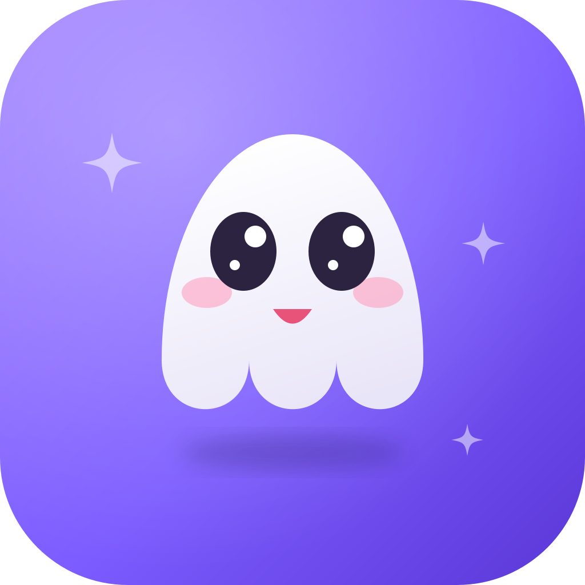

LifePetLifePet floats on your desktop, reads your Google Calendar and Brightspace deadlines, and nudges you before things are due. Boop its nose for a menu. Tuck it into the notch when you need quiet.
One build, universal. Drag it to Applications and you're done.
LifePet.app and choose
Open, then confirm. If it says the app is damaged, run
xattr -dr com.apple.quarantine /Applications/LifePet.app in Terminal once.
Floats above your windows on every Space. Walks around, blinks, naps after ten idle minutes, then wakes up with a stretch. Drag it, poke it, toss it — it bounces.
Send it away and it flies into the menu bar. Hover for your next events, click to
bring it back, or press ⌥⌘L.
Google Calendar and Brightspace. Reminders arrive as speech bubbles with a Join button when it spots a Meet, Zoom or Teams link. Deadlines warn you 24 hours and 2 hours ahead.
Ask what's due this week, find a free hour, add a task, or tell it something to remember. Runs on Gemini with your own free API key.
Boo the ghost, Mochi the cat, Jelly the blob, Ember the dragon and Maple the red panda. Each has its own temperament. Swap any time.
Settings, keys, calendar links and chat live in a local SQLite file with
0600 permissions. Nothing leaves except calls to Google and your own
calendar feeds.
Two minutes, and only the first one is required.
Right-click the pet, or boop its nose and pick the gear.
Free at aistudio.google.com/apikey. Paste it under Brain and leave the model field blank. Without a key everything else still works — you just can't talk to it.
In Brightspace: Calendar → Settings → tick Enable Calendar Feeds → Subscribe → All Calendars and Tasks. Copy the link and paste it in. The Subscribe button stays hidden until feeds are enabled.
Easiest route: Google Calendar settings → your calendar → Integrate calendar → copy Secret address in iCal format. Or sign in with a Google Cloud OAuth client if you want every calendar.